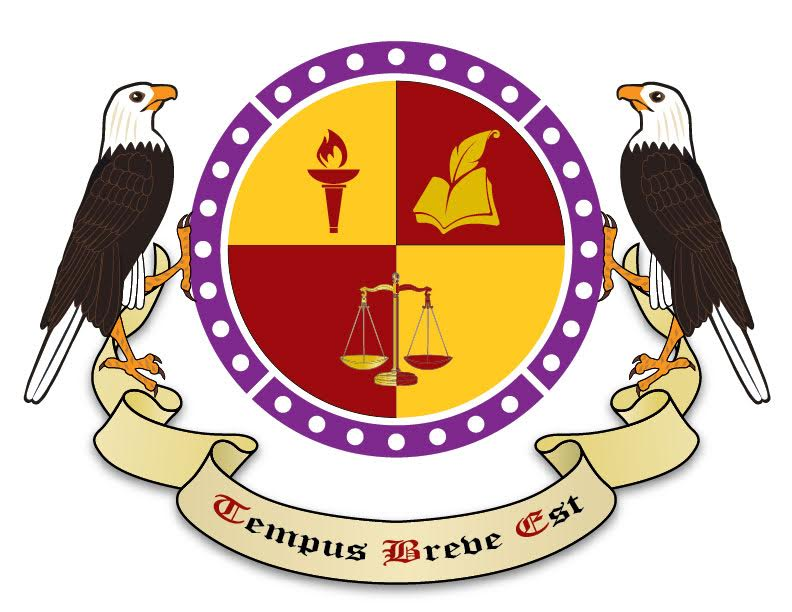

Posted to: The Google+ Heraldry Community
Posted by: Michael Richards
Created on: November 29 2016 at 16:6
So here is a commission someone asked me to do in a Kamon style. He wanted a mix of European and Kamon styles so this is what I came up with. Obviously this wouldn't fly with any heraldic college, but as an exercise I would like to see how you would blazon it.
Here is what I have:
Quarterly Or and Gules, 1st a Torch Gules, 2nd a Book debruised by a Quill Or, 3rd & 4th a Scale Counterchanged. All surrounded by a bordure saltire Purpure with each quarter containing 7 Roundels Argent. Supporters 2 Bald Eagles respectant and the motto Tempus Breve Est (Time Is Short) to be carried in an escroll beneath.

So here is a commission someone asked me to do in a Kamon style. He wanted a mix of European and Kamon styles so this is what I came up with. Obviously this wouldn't fly with any heraldic college, but as an exercise I would like to see how you would blazon it.
Here is what I have:
Quarterly Or and Gules, 1st a Torch Gules, 2nd a Book debruised by a Quill Or, 3rd & 4th a Scale Counterchanged. All surrounded by a bordure saltire Purpure with each